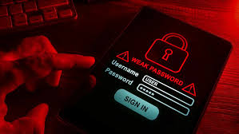
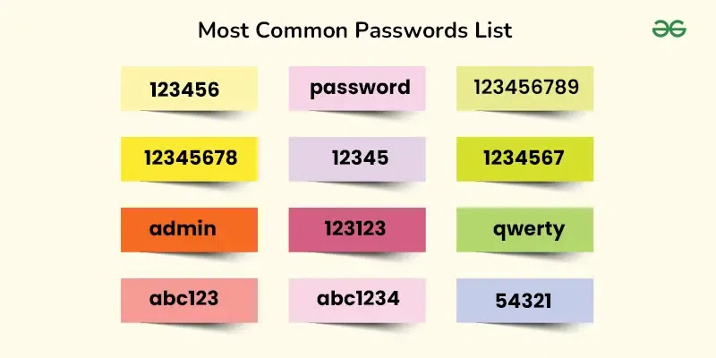
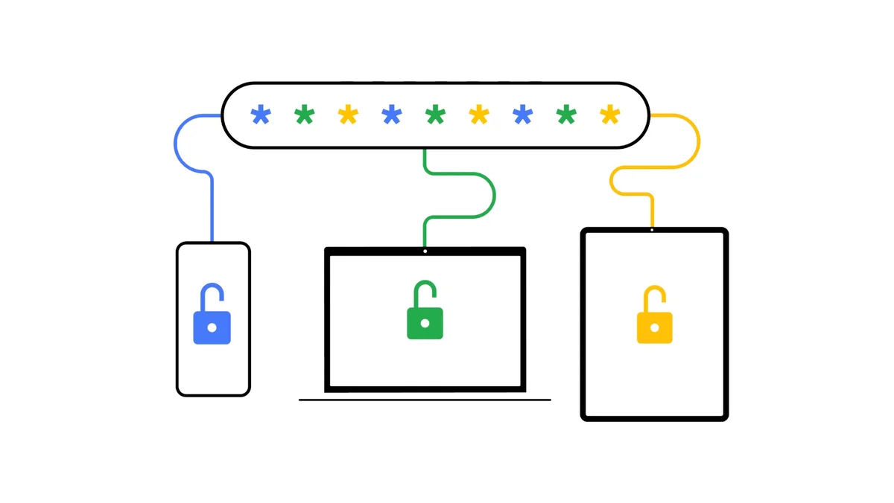
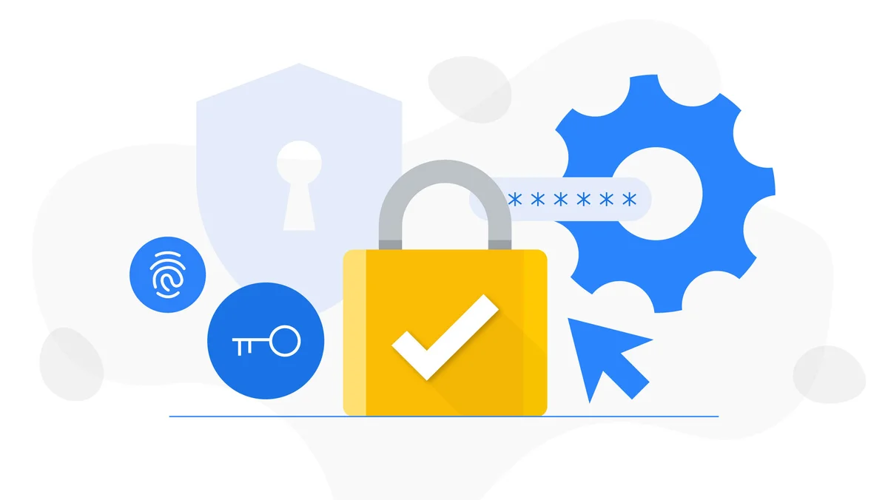

Why It's Necessary to Create Strong Passwords
Introduction
Passwords are the first line of defense against unauthorized access to our online accounts. A strong password is crucial for protecting our personal, financial, and professional information.

The Risk of Weak Passwords
Many people still use simple and easy-to-guess passwords, such as "123456" or "password." These passwords are vulnerable to brute force attacks and can easily compromise accounts.
Characteristics of a Strong Password
- It should be at least 12 characters long.
- Include a mix of uppercase and lowercase letters.
- Include numbers and special characters like @, #, $.
- Avoid common words or personal names.
The Importance of Using Different Passwords
Do not use the same password for all your accounts. If one of your accounts is hacked, all your other accounts will be vulnerable. Use different passwords for each of your services.
Tools for Managing Passwords
There are password management apps that allow you to store strong passwords without having to remember them all. These tools can generate random passwords and store them in an encrypted form.
Conclusion
Online security depends on the choices we make, and one of the most important is creating strong passwords. Don't underestimate the importance of protecting your information with robust passwords.
